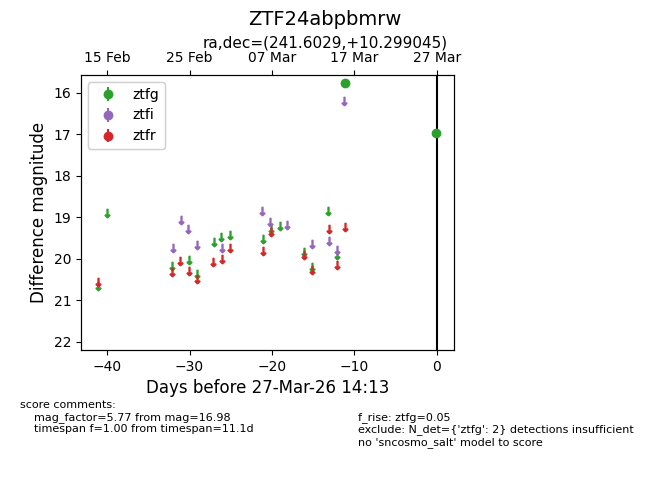
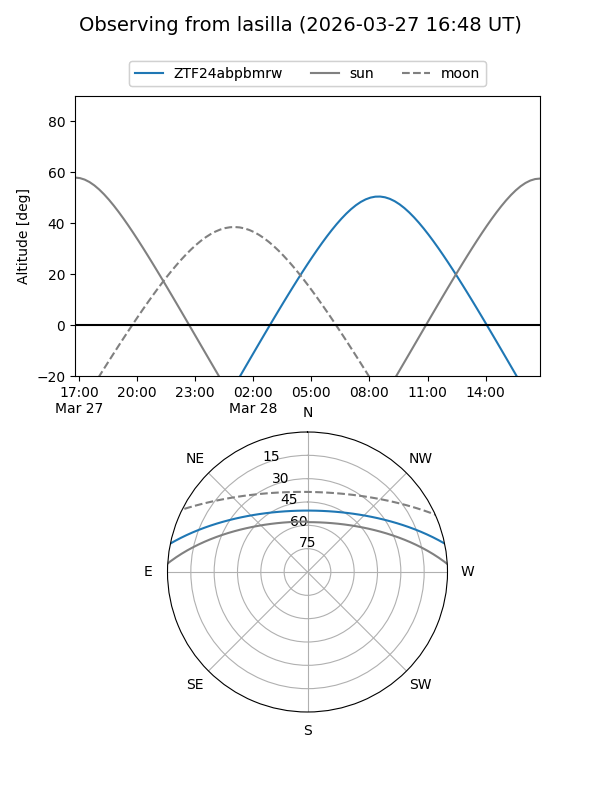
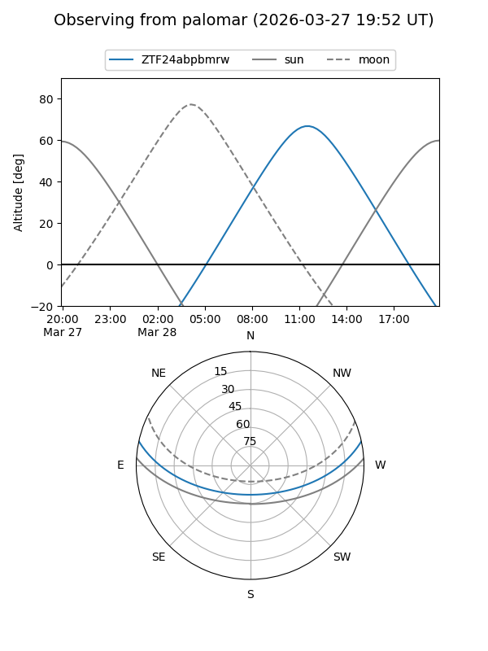

ZTF24abpbmrw
Target ZTF24abpbmrw at 2026-03-27 14:16
Aliases and brokers:
FINK: link
Lasair: link
ALeRCE: link
alt names
ZTF24abpbmrw (ztf,fink_ztf)
Coordinates:
equatorial (ra, dec) = 241.6029,+10.29904
equatorial (HMS+DMS) = 16:06:24.69,+10:17:56.56
galactic (l, b) = (22.4587,+41.22017)
Flags:
Photometry:
last ztfg=16.98
2 ztfg detections
Lightcurve

Visibility


Additional plots